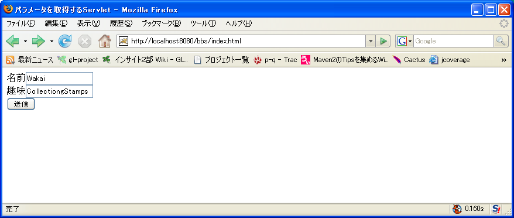
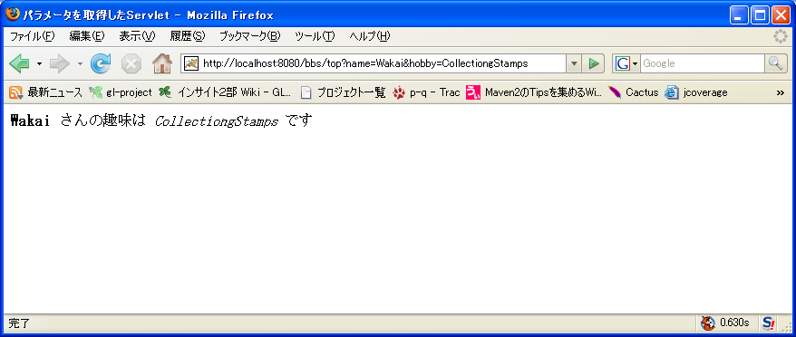
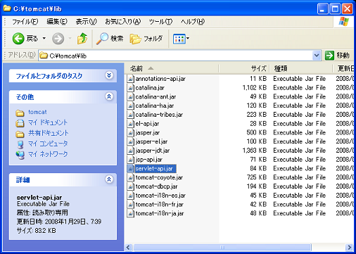
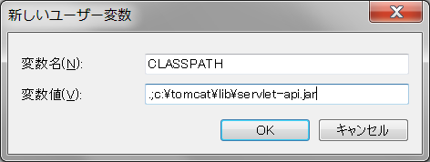

〜掲示板への道〜
1.パラメータを受信するサーブレット編
最初に作るもの
まずは、図1のような画面で「名前」と「趣味」を入力した後、「送信ボタン」を押下したら、
図2のように文字が加工されて表示されるWEBアプリケーションを作成します。
※まだこの時点では日本語対応はしていません。日本語（全角文字）で入力しても、文字化けが発生します。
日本語対応に関しては、別編で説明します。
図1

図2

何はともあれとりあえず作ってみよう
次の手順に従って、まずは必要なファイルを作成しましょう。
どういう仕組みで動いているかは後から見ていきます。
1. %CATALINA_HOME%\webapps ディレクトリに bbs という名前のディレクトリを作成します。
このディレクトリが掲示板アプリケーションのドキュメントルート（すべてのファイルを置く場所）になります。
2. bbs ディレクトリに index.html ファイルを作成します。
ファイルの中身は以下の通りです。
%CATALINA_HOME%\webapps\bbs\index.html
<html>
<head>
<meta http-equiv="Content-Type" content="text/html; charset=Shift_JIS">
<title>掲示板</title>
</head>
<body>
<form action="./top" method="GET">
名前<input type="text" name="name"><br>
趣味<input type="text" name="hobby"><br>
<input type="submit" value="送信">
</form>
</body>
</html>
3. bbs ディレクトリに WEB-INF という名前のディレクトリを作成します。
4. WEB-INF ディレクトリに web.xml という名前のファイルを作成します。
ファイルの中身は、以下の通りです。
%CATALINA_HOME%\webapps\bbs\WEB-INF\web.xml
<?xml version="1.0" encoding="UTF-8"?>
<!DOCTYPE web-app
PUBLIC "-//Sun Microsystems, Inc.//DTD Web Application 2.3//EN"
"http://java.sun.com/dtd/web-app_2_3.dtd">
<web-app>
<servlet>
<servlet-name>servlet_no_namae</servlet-name>
<servlet-class>jp.co.insightech.BBSServlet</servlet-class>
</servlet>
<servlet-mapping>
<servlet-name>servlet_no_namae</servlet-name>
<url-pattern>/top</url-pattern>
</servlet-mapping>
</web-app>
<servlet> の <servlet-name> と、<servlet-mapping> の <servlet-name> を合わせる必要があります。
5. WEB-INF ディレクトリに classes という名前のディレクトリを作成します。
java のクラスファイルはこの classes ディレクトリの中に配置します。
6. jp.co.insightech パッケージに該当するディレクトリを作成する
classes ディレクトリに jp ディレクトリを
jp ディレクトリに co ディレクトリを
co ディレクトリに insightech ディレクトリを作成します。
7. insightech ディレクトリに BBSServlet.java という名前のファイルを作成します。
ファイルの中身は以下の通りです。
%CATALINA_HOME%\webapps\bbs\jp\co\insightech\BBSServlet.java
package jp.co.insightech;
import java.io.*;
import javax.servlet.*;
import javax.servlet.http.*;
public class BBSServlet extends HttpServlet {
public void doGet(HttpServletRequest request, HttpServletResponse response)
throws ServletException, IOException {
String name = request.getParameter("name");
String hobby = request.getParameter("hobby");
response.setContentType("text/html; charset=MS932");
PrintWriter out = response.getWriter();
out.println("<html><head><title>掲示板</title></head>");
out.println("<body><b>");
out.println(name);
out.println("</b>さんの趣味は<i>");
out.println(hobby);
out.println("</i>です");
out.println("</body></html>");
out.close();
}
public void doPost(HttpServletRequest request, HttpServletResponse response)
throws ServletException, IOException {
doGet(request, response);
}
}
この時点で、次のような構成になっていることを確認してください。
C:\tomcat\webapps\bbs>tree /F
フォルダ パスの一覧
ボリューム シリアル番号は 00007CE4 6377:4DBE です
C:.
│ index.html
│
└─WEB-INF
│ web.xml
│
└─classes
└─jp
└─co
└─insightech
BBSServlet.java
これで必要なファイルは出揃いました。
コンパイルする
他のファイルは置くだけでよいのですが、java ファイルだけはコンパイルする必要があります。
コンパイルしないと実行することが出来ません。
コマンドプロンプトを起動して、次のようにしてコンパイルしましょう。
C:\>cd c:\tomcat\webapps\bbs\WEB-INF\classes
C:\tomcat\webapps\bbs\WEB-INF\classes>javac jp\co\insightech\*.java
すると次のようなエラーメッセージが表示されるはずです。
BBSServlet.java:4: パッケージ javax.servlet は存在しません。
import javax.servlet.*;
^
BBSServlet.java:5: パッケージ javax.servlet.http は存在しません。
import javax.servlet.http.*;
^
BBSServlet.java:7: シンボルを見つけられません。
シンボル: クラス HttpServlet
public class BBSServlet extends HttpServlet {
^
BBSServlet.java:9: シンボルを見つけられません。
シンボル: クラス HttpServletRequest
場所 : jp.co.insightech.BBSServlet の クラス
public void doGet(HttpServletRequest request, HttpServletResponse response)
^
BBSServlet.java:9: シンボルを見つけられません。
シンボル: クラス HttpServletResponse
場所 : jp.co.insightech.BBSServlet の クラス
public void doGet(HttpServletRequest request, HttpServletResponse response)
^
BBSServlet.java:10: シンボルを見つけられません。
シンボル: クラス ServletException
場所 : jp.co.insightech.BBSServlet の クラス
throws ServletException, IOException {
^
BBSServlet.java:28: シンボルを見つけられません。
シンボル: クラス HttpServletRequest
場所 : jp.co.insightech.BBSServlet の クラス
public void doPost(HttpServletRequest request, HttpServletResponse response)
^
BBSServlet.java:28: シンボルを見つけられません。
シンボル: クラス HttpServletResponse
場所 : jp.co.insightech.BBSServlet の クラス
public void doPost(HttpServletRequest request, HttpServletResponse response)
^
BBSServlet.java:29: シンボルを見つけられません。
シンボル: クラス ServletException
場所 : jp.co.insightech.BBSServlet の クラス
throws ServletException, IOException {
^
エラー 9 個
C:\tomcat\webapps\bbs\WEB-INF\classes>
これは、BBSServletで使用されている HttpServlet クラスや HttpServletRequest クラスが見つからないことが原因です。
HttpServlet クラスや HttpServletRequest クラスは %CATALINA_HOME%\lib の下にある servlet-api.jar の中に入っています。

そこで次のいずれかの方法で servlet-api.jar にクラスパスを通すことで、コンパイル時に
HttpServlet クラスや HttpServletRequest クラスが見つかるようにしてやる必要があるのです。
クラスパスを通す方法１ コンパイルオプションで指定する
コンパイルする際に、-classpathオプションを指定することで、
クラスパスを設定することができます。
C:\tomcat\webapps\bbs\WEB-INF\classes>javac -classpath c:\tomcat\lib\servlet-api.jar jp\co\insightech\*.java
C:\tomcat\webapps\bbs\WEB-INF\classes>
クラスパスを通す方法２ 環境変数 CLASSPATH で指定する
毎回オプションを入れるのは面倒ですよね
環境変数 CLASSPATH を設定すると、いちいちオプションで指定する必要がなくなります。

ここで、.; （カレントディレクトリ）をいれるのを絶対に忘れないでください。
これを忘れると java コマンドを実行した場合に、カレントディレクトリ、すなわち今いるディレクトリの下にある
クラスを見つけることが出来ずにClassNotFoundException が発生してしまいます。
環境変数の設定を更新した場合は、既に開いているコマンドプロンプトを閉じてください。
そうしないと、環境変数が反映されません。
環境変数 CLASSPATH を設定したら、もうコンパイルエラーは発生しないはずです。
C:\>cd c:\tomcat\webapps\bbs\WEB-INF\classes
C:\tomcat\webapps\bbs\WEB-INF\classes>javac jp\co\insightech\*.java
C:\tomcat\webapps\bbs\WEB-INF\classes>
実行する
実行は、Tomcat を起動後、ブラウザで http://localhost:8080/bbs/index.html にアクセスします。
Tomcat の起動方法を忘れてしまった人はこちらを参照してください。
図1、図2のように動作しましたか？
うまく動かなかった人は、どこかに間違いがあるはずです。もう一度よく読みなおして修正してください。
解説
http://localhost:8080/bbs/index.html にアクセスすると、Tomcat は
%CATALINA_HOME%\webapps\bbs\index.html の内容をブラウザに返却します。
index.html の
<form action="./top" method="GET">
名前<input type="text" name="name"><br>
趣味<input type="text" name="hobby"><br>
<input type="submit" value="送信">
</form>
の部分に着目してください。送信ボタンをおすと、
<form action="./top" method="GET">
の action で指定している URL「./top」すなわち「http://localhost:8080/bbs/top」に遷移します。
ここで http://localhost:8080/bbs/top は %CATALINA_HOME%\webapps\bbs\web.xml の
次の部分で指定している url-pattern に合致していますね。
<servlet>
<servlet-name>servlet_no_namae</servlet-name>
<servlet-class>jp.co.insightech.BBSServlet</servlet-class>
</servlet>
<servlet-mapping>
<servlet-name>servlet_no_namae</servlet-name>
<url-pattern>/top</url-pattern>
</servlet-mapping>
そのため、Tomcat は %CATALINA_HOME%\webapps\bbs\top というファイルを探してその内容を返却する替わりに
jp.co.insightech.BBSServlet を実行した結果（厳密にはレスポンスに設定された情報）をブラウザに返却します。
この例で実際に返却された内容は次のようなものになります。
<html><head><title>掲示板</title></head>
<body><b>
Wakai
</b>さんの趣味は<i>
CollectiongStamps
</i>です
</body></html>
次に、図2のアドレスバーの「http://localhost:8080/bbs/top?name=WAKAI&hobby=CollectingStamps」に注目してください。
? 以降の文字列はリクエストパラメータと言います。
基本的に、WEBアプリケーションは、画面からサーバー（Tomcat） へ何らかの情報を渡して、サーバーでその情報を
受け取って処理するアプリケーションです。
情報を渡す方法は、１つしかありません。
name=WAKAI のようにして、
パラメータ名（この例では name）とパラメータの値（この例では WAKAI）を渡すのです。
（※ Cookie やその他の Header でも渡せますが、これらはあくまで補助的なものであり、基本はすべてパラメータです。）
パラメータとパラメータの間は & で区切ります。
 <form> タグの method="GET" の部分を、
method="POST" にしたらどうなるでしょうか？
<form> タグの method="GET" の部分を、
method="POST" にしたらどうなるでしょうか？
©日本インサイトテクノロジー株式会社